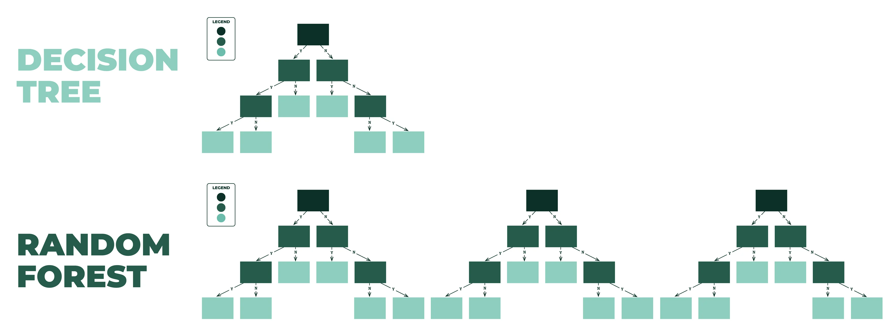

# load packages
library(tidyverse)
library(dplyr)
library(tidymodels)
library(janitor) ## clean_names()
library(ranger) ## random forest model engine
library(ggplot2)
library(corrplot)
library(ggbeeswarm)
library(patchwork)
# load data
hotel <- read.csv("data/HotelReservations.csv")vignette.qmd
Random Forest Vignette
Introduction
In this project, we are presenting a vignette on Random Forest. If you are new to this topic, then this vignette would be a great guideline for you to have a great understanding on Random forest model, and we will also show the sample code on a dataset to predict hotel cancellation using Random Forest.
Learning Objectives:
learn the intuitions behind Random Forest models
- Decision trees, hyper-parameters, and more
Implement, tune, and evaluate Random Forest models in R
Here we have a introductory video for you to better know what is Random Forest.
Example Data – Hotel Reservation Data to Implement
Data Description
This dataset is obtained from kaggle. There are 19 predictors in this data set. Booking status is the target varibale, indicating whether the reservation was canceled or not (binary: 2 values). There are 36275 observations in total. The goal of predicting hotel reservations is to forecast the number of bookings a hotel will receive for a specific date range, based on historical data and other relevant factors such as seasonality, market trends, and pricing strategies.
Data Dictionary
Booking_ID: unique identifier of each booking
no_of_adults: Number of adults
no_of_children: Number of Children
no_of_weekend_nights: Number of weekend nights (Saturday or Sunday) the guest stayed or booked to stay at the hotel
no_of_week_nights: Number of week nights (Monday to Friday) the guest stayed or booked to stay at the hotel
type_of_meal_plan: Type of meal plan booked by the customer
required_car_parking_space: Does the customer require a car parking space? (0 - No, 1- Yes)
room_type_reserved: Type of room reserved by the customer. The values are ciphered (encoded) by INN Hotels.
lead_time: Number of days between the date of booking and the arrival date
arrival_year: Year of arrival date
arrival_month: Month of arrival date
arrival_date: Date of the month
market_segment_type: Market segment designation.
repeated_guest: Is the customer a repeated guest? (0 - No, 1- Yes)
no_of_previous_cancellations: Number of previous bookings that were canceled by the customer prior to the current booking
no_of_previous_bookings_not_canceled: Number of previous bookings not canceled by the customer prior to the current booking
avg_price_per_room: Average price per day of the reservation; prices of the rooms are dynamic. (in euros)
no_of_special_requests: Total number of special requests made by the customer (e.g. high floor, view from the room, etc)
booking_status: Flag indicating if the booking was canceled or not.
Load Packages and Data
Preprocess the data
Before implementing the model, we need to make sure the dataset is ready for use. First, change variable names to a unified format. They will contain only “_”, numbers, and letters.
# cleaning predictor names
hotel <- clean_names(hotel)Now let’s take a look at how our data is stored.
# view data structure and display the first 8 variables
str(hotel, vec.len = 2, list.len = 8)'data.frame': 36275 obs. of 19 variables:
$ booking_id : chr "INN00001" "INN00002" ...
$ no_of_adults : int 2 2 1 2 2 ...
$ no_of_children : int 0 0 0 0 0 ...
$ no_of_weekend_nights : int 1 2 2 0 1 ...
$ no_of_week_nights : int 2 3 1 2 1 ...
$ type_of_meal_plan : chr "Meal Plan 1" "Not Selected" ...
$ required_car_parking_space : int 0 0 0 0 0 ...
$ room_type_reserved : chr "Room_Type 1" "Room_Type 1" ...
[list output truncated]Notice how the categorical variables are stored in character variables. We need to transform them into factors before we encode them into binary variables later.
Action
Use lapply() to turn categorical variables into factors.
Exploratory Data Analysis
After proper transformations, let’s explore our data a little before we move on to the models.
First, check the correlation between numerical variables.
hotel %>%
select(is.numeric) %>%
cor() %>%
corrplot(type = "lower", tl.cex = 0.5, tl.srt = 45)Warning: Use of bare predicate functions was deprecated in tidyselect 1.1.0.
ℹ Please use wrap predicates in `where()` instead.
# Was:
data %>% select(is.numeric)
# Now:
data %>% select(where(is.numeric))no_of_repeated_guest is positively correlated with no_of_previous_bookings_not_canceled. Arrival year is negatively correlated with arrival_month. Since most of the predictors do not overly correlate with each other, they likely store different information as well. Thus, we will use all of them as predictors for decision tree and random forest models to pool from later.
Next, make a histogram to see the distribution of the booking status.
hotel %>%
ggplot(aes(x=booking_status)) +
geom_bar() +
labs(title = "Distribution of Booking Status")From the plot, we can see that “Canceled” outnumbers “Not_Canceled” a lot. In order to deal with the imbalance, we may use stratified sampling during data partitioning and a class_weight parameter during the model fitting process. They will be illustrated in latter sections.
Lastly, let’s take a look at the correlation between our predictors and the target variable.
numeric_vars <- names(hotel)[sapply(hotel, is.numeric)] # Get names of numeric variables
plots <- list() # List to store plots
for (var in numeric_vars) {
p <- ggplot(hotel, aes_string(x = "booking_status", y = var)) +
geom_quasirandom() +
theme_minimal() +
ggtitle(var) +
scale_x_discrete(labels = c("C", "NC")) +
theme(axis.title.y = element_text(size = rel(0.6)), axis.title.x = element_text(size = rel(0.6)), axis.text.y = element_text(size = rel(0.6)), axis.text.x = element_text(size = rel(0.6)), title = element_text(size = rel(0.6)), )
plots[[var]] <- p # Store the plot in the list
}Warning: `aes_string()` was deprecated in ggplot2 3.0.0.
ℹ Please use tidy evaluation idioms with `aes()`.
ℹ See also `vignette("ggplot2-in-packages")` for more information.plots[[1]] + plots[[2]] + plots[[3]] + plots[[4]] + plots[[5]] + plots[[6]] + plots[[7]] + plots[[8]] + plots[[9]] + plots[[10]] + plots[[11]] + plots[[12]] + plots[[13]] + plots[[14]] lead_time seems to be a strong predictor; no_of_previous_booking_not_canceled and no_of_special_requests also have a decent correlation with our target. We can later confirm these assumptions by inspecting feature importance in the random forest model.
Data Partition
Split the dataset into a training and a testing set. Use “booking_status” as the stratification variable to ensure it has equivalent proportions in two sets.
set.seed(3435)
hotel_split <- initial_split(hotel, strata=
"booking_status", prop = 0.7)
hotel_train <- training(hotel_split)
hotel_test <- testing(hotel_split)
Action
Check the dimension of training data and testing data to see if the data has been split correctly.
Preprocessing Recipe
Now let’s create a recipe for our dataset.
# Create a recipe for the dataset
hotel_recipe <- recipe(booking_status ~., data = hotel_train) Limit the amount of factor levels for each predictor using step_other(). Factor levels with an occurring frequency less than 0.05 would be pooled to “other”.
hotel_recipe <- hotel_recipe %>%
step_other(all_nominal_predictors(), threshold = 0.05)Using step_dummy(), encode factor variables to multiple binary variables which correspond to each factor level.
hotel_recipe <- hotel_recipe %>%
step_dummy(all_nominal_predictors()) Cross-Validation Setup
K-fold cross-validation is a statistical technique that helps assess a model’s ability to generalize. By partitioning the entire dataset in to k smaller sets and repeatedly train/evaluate the model on different sets, it ensures all data has a chance of appearing in the training and evaluation set. As a result, the assessment of the model would be much more robust, since it is almost impossible for a model that overfits to perform well in all folds.
# 10-fold Cross validation
hotel_folds <- vfold_cv(hotel_train, v = 10, strata = booking_status)
Action
Try to change the folds number for the cross validation to see if the results change.
Intuition and Architecture
Understanding Decision Trees
Decision Trees are a fundamental component of many machine learning algorithms, known for their simplicity and interpretability. Decision trees handle both categorical and numerical data and can model complex relationships with a series of simple decisions.
Imagine a decision tree as a tree-like model of decisions, resembling a flowchart, where each internal node represents a test on an attribute, each branch represents the outcome of the test, and each leaf node represents a class label (a decision taken after computing all attributes). The paths from root to leaf represent classification rules.
However, they are prone to overfitting, especially when they are overly deep and complex. A tree that perfectly models the training data can fail to generalize to new, unseen data. Thus, balancing the depth of the tree and the amount of training data is crucial for building an effective decision tree model.
Now let’s implement a basic decision tree. decision_tree() defines a model as a set of if/then statements that creates a tree-based structure.
- set_mode() specifies the type of problem we are handling
- set_engine() specifies the type of package/system used to fit the model later.
- set_args() specifies the values of arguments of decision_tree(); here we set the depth of the tree to be in the range of [1, 15].
# Define the model (Decision Tree)
dt_model<-decision_tree() %>%
set_mode("classification") %>% ## type of tasks
set_engine("rpart") %>% ## type of engine used to fit the model
set_args(tree_depth(c(1L, 15L))) ## Other parametersCreate a workflow object, set its recipe to hotel_recipe, and add dt_model as its model.
# combine the model and the dataset to a workflow
dt_wf <- workflow() %>%
add_recipe(hotel_recipe) %>%
add_model(dt_model)Use fit_resamples() to fit multiple models on the cross-validation folds we created earlier. - use “metrics =” to specify what to keep track for each model’s performance evaluation.
# fit the model
hotel_results_dt <- fit_resamples(
dt_wf,
resamples = hotel_folds, ## cross-validation
metrics = metric_set(roc_auc, accuracy, sensitivity, specificity) ## metrics to keep track on
)Let’s see how this model performed on the training set and testing set.
First, retrieve the training set metrics recorded during the training process. Check the variance of the metrics across different folds in order to look for signs of overfitting.
results_summary_dt <- hotel_results_dt %>%
collect_metrics(summarize = FALSE) %>%
select(c(".metric", ".estimate")) %>%
group_by(.metric) %>%
summarise(variance = var(.estimate))
results_summary_dt# A tibble: 4 × 2
.metric variance
<chr> <dbl>
1 accuracy 0.0000342
2 roc_auc 0.0000763
3 sensitivity 0.000212
4 specificity 0.0000242We see that the metrics does not vary too much across different folds. This means the model did not overfit. Let’s proceed to assess the model on the testing set.
Fit the model again, but this time on the entire training set.
dt_fit_train <- fit(dt_wf, data = hotel_train)Augment the testing set using the fitted model.
dt_test <- augment(dt_fit_train,
hotel_test) %>%
select(booking_status, starts_with(".pred"))
predictions <- dt_test %>%
select(booking_status, .pred_class, .pred_Canceled)Calculate the four metrics and present them in a tibble.
sensitivity_val <- predictions %>% sens(truth = booking_status, estimate = .pred_class)
specificity_val <- predictions %>% spec(truth = booking_status, estimate = .pred_class)
accuracy_val <- predictions %>% accuracy(truth = booking_status, estimate = .pred_class)
roc_auc_val <- predictions %>% roc_auc(truth = booking_status, .pred_Canceled)
model_metrics <- tibble(
.metric = c("accuracy", "roc_auc", "sensitivity", "specificity"),
test = c(accuracy_val$.estimate, roc_auc_val$.estimate, sensitivity_val$.estimate, specificity_val$.estimate)
)
model_metrics# A tibble: 4 × 2
.metric test
<chr> <dbl>
1 accuracy 0.824
2 roc_auc 0.826
3 sensitivity 0.688
4 specificity 0.891
Action
Play around with different parameters - engine, tree_depth, number of folds, etc. - and see if you can achieve a higher performance.
Random Forest and Ensemble models

The Random Forest algorithm is an ensemble learning method, primarily used for classification and regression. It constructs a multitude of decision trees at training time. The fundamental concept is simple: combine the predictions from multiple decision trees to produce a more accurate prediction than a single decision tree.
Each tree in a random forest is built from a sample drawn with replacement (bootstrap sample) from the training set. Furthermore, when splitting a node during the construction of the tree, the split is chosen from a random subset of the features, rather than the best split among all features. This strategy of ‘bagging’ and feature randomness introduces diversity among the trees, ultimately leading to a more robust overall prediction and reducing the risk of overfitting.
Additionally, random forests provide a measure of feature importance, which can be insightful for understanding the predictive power of individual features in the model; the algorithm can be parallelized for execution because each tree in the forest is built independently of the others, which makes the algorithm well-suited for modern multi-processor computers; it does not require feature scaling (like standardization or normalization) before input, as it does not rely on distance calculations.
Use rand_forest() to implement a random forest model. Similar to the decision tree model we implemented earlier, use set_mode() and set_engine() to complete our model definition.
There is a couple of parameters you can play around with:
- mtry: the number of random sampled predictors used for each split
- trees: number of trees
- min_n: minimum number of data needed in a node to split further into two branches.
There are several ways to determine the best way to split when building a tree. the ranger engine allows us to specify it. We set importance = impurity in set_engine(), so that the engine used gini index to determine how to split.
rf_model <- rand_forest(mtry = 10,
trees = 10,
min_n = 10) %>%
set_mode("classification") %>%
set_engine("ranger", importance = "impurity")Again, combine the model and recipe into a workflow.
rf_wf <- workflow() %>%
add_model(rf_model) %>%
add_recipe(hotel_recipe)Fit the model using fit_resamples(). You will notice this time it takes longer for the model to fit.
# fit the model
hotel_results_rf <- fit_resamples(
rf_wf,
resamples = hotel_folds,
metrics = metric_set(roc_auc, accuracy, sensitivity, specificity) ## metrics to keep track on
)Check the variance of the model metrics across different folds
# summarize the result
results_summary_rf <- hotel_results_rf %>%
collect_metrics(summarize = FALSE) %>%
select(c(".metric", ".estimate")) %>%
group_by(.metric) %>%
summarise(variance = var(.estimate))
results_summary_rf# A tibble: 4 × 2
.metric variance
<chr> <dbl>
1 accuracy 0.0000411
2 roc_auc 0.0000135
3 sensitivity 0.000153
4 specificity 0.0000409Again, we do not see clear signs of overfitting. Let’s proceed to perform the same evaluation we did on the decision tree model.
rf_fit_train <- fit(rf_wf, data = hotel_train)
rf_test <- augment(rf_fit_train,
hotel_test) %>%
select(booking_status, starts_with(".pred"))
predictions <- rf_test %>%
select(booking_status, .pred_class, .pred_Canceled)
sensitivity_val <- predictions %>% sens(truth = booking_status, estimate = .pred_class)
specificity_val <- predictions %>% spec(truth = booking_status, estimate = .pred_class)
accuracy_val <- predictions %>% accuracy(truth = booking_status, estimate = .pred_class)
roc_auc_val <- predictions %>% roc_auc(truth = booking_status, .pred_Canceled)
model_metrics <- tibble(
.metric = c("accuracy", "roc_auc", "sensitivity", "specificity"),
test = c(accuracy_val$.estimate, roc_auc_val$.estimate, sensitivity_val$.estimate, specificity_val$.estimate)
)
model_metrics# A tibble: 4 × 2
.metric test
<chr> <dbl>
1 accuracy 0.891
2 roc_auc 0.948
3 sensitivity 0.799
4 specificity 0.936Notice a decent improvement in all four metrics compared to the decision tree model. It supports and demonstrates the idea that an ensemble model make predictions than a single model.
Action
Try altering the number of trees or the max depths of the trees to see if the results change. Can you achieve a better model performance?
Hyper-parameters Tuning
As you notice in the last section, a few adjustment in the model parameters may result in big difference in its final performance.
In a random forest model, there is a couple of important hyper-parameters to tune:
Overview of some common hyper-paremeters
Number of Variables per split (mtry in rand_forest()): This is the number of variables to possibly split at each node. Higher values more likely result in overfitting.
Number of Trees (trees in rand_forest()): This is the number of trees in the forest. Generally, more trees increase model performance and make the model more robust, but also increase computational cost.
Maximum Depth of Trees (max_depth in the ranger engine): This determines the maximum depth of each tree. Deeper trees can model more complex patterns, but they can also lead to overfitting. When there is a minimum number of samples required to split a node, you may set this to None.
Minimum Samples Split (min_n in rand_forest()): This is the minimum number of samples required to split an internal node. Higher values prevent creating nodes that might overfit to your data.
Criterion (importance in the ranger engine): The function to measure the quality of a split. Supported criteria are “impurity” for the Gini impurity and “none” for the information gain.
Class Weight (class.weight in the ranger engine): This parameter is used to balance the dataset. It’s especially important when dealing with imbalanced datasets
In this section we will learn how to use grid to search for the best parameter combination. For simplicity we only focus on three parameters: mtry, trees, and min_n.
First we need to create another model using tune() as placeholders for parameter values.
# Define the model (Random Forest)
rf_model_tune <- rand_forest(mtry = tune(), ## number of random sampled predictors used for each split
trees = tune(), ## number of trees
min_n = tune()) %>% ## minimum number of data points needed in a node to split
set_mode("classification") %>% ## type of tasks
set_engine("ranger", importance = "impurity") ## type of engine used to fit the modelNext, create a grid that specifies the range of values each parameter may hold. levels indicates how many values from the range will be selected. The selected values would divide each range into equal intervals.
For example, a grid with three tuning parameters and three levels will have 3^3 combinations of parameter lists. 3^3 models will be fitted, each corresponding to a combination of parameters.
rf_grid <- grid_regular(
mtry(c(5, 16)),
trees(c(50, 100)),
min_n(c(10, 20)),
levels = 3
)Create a workflow as usual, but use tune_grid(..., grid = ) to fit the model this time.
# combine the model and the dataset to a workflow
rf_wf_tune <- workflow() %>%
add_model(rf_model_tune) %>%
add_recipe(hotel_recipe)
hotel_results_rf_tune <- tune_grid(
rf_wf_tune,
resamples = hotel_folds,
grid = rf_grid)show_best() will show the best models out of all 27 and their performance metrics.
show_best(hotel_results_rf_tune, metric = "roc_auc")# A tibble: 5 × 9
mtry trees min_n .metric .estimator mean n std_err .config
<int> <int> <int> <chr> <chr> <dbl> <int> <dbl> <chr>
1 10 75 10 roc_auc binary 0.953 10 0.00124 Preprocessor1_Model05
2 10 100 10 roc_auc binary 0.953 10 0.00111 Preprocessor1_Model08
3 10 100 15 roc_auc binary 0.952 10 0.00114 Preprocessor1_Model17
4 10 75 15 roc_auc binary 0.952 10 0.00111 Preprocessor1_Model14
5 16 75 10 roc_auc binary 0.952 10 0.00111 Preprocessor1_Model06The std_err() column shows us that there is no sign of overfitting.
Before we proceed to augment the testing set, first we need to select the best model out of all 27 models, and finalize the workflow with the best parameter list.
best_params <- select_best(hotel_results_rf_tune, metric = "accuracy")
rf_final_workflow_train <- finalize_workflow(rf_wf_tune, best_params) Now we can repeat the evaluation process
rf_final_fit_train <- fit(rf_final_workflow_train, data = hotel_train)
rf_final_test <- augment(rf_final_fit_train, hotel_test) %>%
select(booking_status, starts_with(".pred"))
predictions <- rf_final_test %>%
select(booking_status, .pred_class, .pred_Canceled)
sensitivity_val <- predictions %>% sens(truth = booking_status, estimate = .pred_class)
specificity_val <- predictions %>% spec(truth = booking_status, estimate = .pred_class)
accuracy_val <- predictions %>% accuracy(truth = booking_status, estimate = .pred_class)
roc_auc_val <- predictions %>% roc_auc(truth = booking_status, .pred_Canceled)
# Create a new variable to store the metrics
model_metrics <- tibble(
.metric = c("accuracy", "roc_auc", "sensitivity", "specificity"),
test = c(accuracy_val$.estimate, roc_auc_val$.estimate, sensitivity_val$.estimate, specificity_val$.estimate)
)
model_metrics# A tibble: 4 × 2
.metric test
<chr> <dbl>
1 accuracy 0.899
2 roc_auc 0.954
3 sensitivity 0.811
4 specificity 0.943
Action
Try to tune other parameters of the Random Forest model using a grid to see if the results change. Is there a better model performance?
Understanding the Random Forest model
Features Importance
Random Forest can be used to rank the importance of variables in a regression or classification problem.
Higher the value of mean decrease accuracy or mean decrease gini score , higher the importance of the variable in the model.
A good tool to visualize features importance is to use the VIP plot (Variable Importance Plot), you may use vip() function from the vip package as shown below:
library(vip)
Attaching package: 'vip'The following object is masked from 'package:utils':
virf_final_fit_train %>% extract_fit_parsnip() %>%
vip() +
theme_minimal()As we analyzed before, leading_time is the most important feature after we plot the Variance Important Plot. So our results justified our preliminary exploratory analysis.
Final Thoughts
After reading this vignette, you should know how Random Forest work as a machine learning algorithm and how to implement this model in R through our step-by-step instruction. You should also know how to fine tune Random Forest by adjusting mtry, trees, min_n.
Discussion
Can you try fit Random Forest to some other datasets? How does it perform with Regression? Can you encapsulate fitting Random Forest model in R in a few steps?